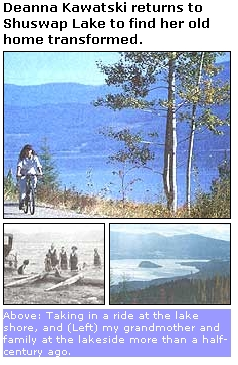
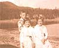

SHUSWAP DIARY
Summer rapidly approaches. I'm sitting by Shuswap Lake in southern British Columbia and breathing in the aquamarine air. This has long been my favorite season here, and as I stare toward Blake Point a half-mile across Magna Bay, I thrill at the thought of my daily swims there throughout the last warm days of 1978. One in particular I will never forget: The tourists have all migrated back to the city and I have the lake to myself. It holds me in its frigid grip as I fill my lungs with apple-ripe air and stroke toward the far side. Blake Point is a slender sculptured arm of sand that stretches out from a stand of crowned cottonwood, to loosely embrace the bay. As I approach, voices ring out to me across the surface. Drawing nearer I see no less than 100 Canada geese strutting on the farthest reach of sand. Closer yet, I watch half of the dark-headed flock leave the rank and begin swimming out toward me. Rhythmically they form a V, their black eyes shining in concentration above their white chin straps. Astonished, I find myself in the lead, at the very apex of their design. Then a clatter of wings and trumpets shatters the calm as they fly low over me, nearly brushing me with wing tips in passing. Elated, I continue to the point, then turn to swim back. Not far from shore I am astounded to swing around and see the remaining geese following. Once again I find myself at the apex of the V We glide through the lake for a few moments until I again feel them take flight around me.
It was with memories such as this that I returned to Shuswap Lake three years ago. Apart from reconnecting with my family, I also longed to lay eyes on the lake again, and to be immersed in its time-steeped waters. I was the fourth generation to regularly stand hypnotized by its shimmer against the multihued mountainside. But this was 1992, and baffled I watched battalions of high-powered boats veer across the bay. Every size and description of toy imaginable was out there creating havoc with the natural serenity. After 13 years in the wilderness I simply couldn't grasp it.
Sadly, Shuswap Lake's reputation as a party place has grown substantially over the years. Sicamous on the most southerly arm, has been dubbed "Houseboat Capital of the World," and advertising for "booze and cruise" trips on the lake have brought the yahoos in from far and wide. It is no longer safe to swim more than 50 feet from shore. All this past summer I watched a mother mallard with her brood of eight navigate nervously along the bay, negotiating wide passes around the tightening intrusion of wharves and fences of plastic buoys. Submerged in the stench of gasoline fumes, and buffeted about by the crazed wake of throngs of motorized missiles, the mother mallard struggled to stay in tune with the natural rhythms that had flowed through her kind for aeons.
Sitting in the sweltering sun this summer I watched incredulously as a house boat decked out in a neon pink banner pulled into the bay. In large black letters it proclaimed SEADOO RENTALS. A clutch jet-ski boats hung like baby leeches off of the larger vessel. The operator, without considering the already chaotic state of the bay or the wishes of the residents, was willing to add to the din to make a buck. Soon beach-goers were tearing over and paying for a whirl on a seadoo. Mounting one seems to induce instant insanity. With the persistence of giant mosquitoes they spun around in idiotic circles, intruding on every level of life and rights in the land. But with luck the marvelous happened. From the west side of the bay a canoe made a beeline for the houseboat. In the distance they merged. Within minutes the houseboat retreated out of Magna Bay, its gaudy sign still screaming.
Madge Noakes, who lives with her husband near Blake Point (she grew up on the point and it was named after her family), looks as delicate as porcelain, but she has a core of steel. Vibrant with anger she told me about the seadoo she had seen chasing a family of geese. In the past she had actually witnessed a speedboat running a Canada goose to death. One summer, with her aura of white hair and frame that looks as though it could be knocked over with a feather, she single-handedly took on a gang of rowdies who refused to leave her private beach. One of the brawny beer guzzlers had even threatened her with a fist, to which Madge responded, "Go ahead and hit me." When they delivered the even more articulate insult of mooning her, their lewd gesture backfired. Madge had her camera poised and the perfect shot put the power in her hands. After that they no longer crossed her property line. But as Madge summed it up, "We can write the summers off until we get controls in." Apart from business people dependent upon the tourist dollar, there are few members of the North Shuswap community who meet the annual invasion with anything less than dread. Granted, tourism is inevitable and it wins hands down over other resource-based industries, but what the locals want is respect for the area. Let it be known for its natural beauty and the lively population of artists and crafts people gracing its shore, rather than a lawless out back where some venture only to "party till they puke."
Every morning after seeing the kids off to school, I begin my day with a beach walk. It helps to clear the cobwebs, and also to stretch my legs before sitting down to write. Best of all, I never know what surprises wait for me once I step outside the close confines of my trailer. Across the road the Lake beckons, ever alluring no matter what the weather.
One frigid morning I stood by an intensely steaming lake with an amicable border collie named Cedar. I had agreed to dogsit Cedar for awhile and he made a point of following me most mornings. As we walked and watched the ghosts of vapor rise from the waters, a movement in the lake brought us to a halt on a rocky beach near the red railed wharf. Beside the structure I could see two dark heads in the water. Then another, and another, and I soon recognized them as animals rather than birds. As their sleek bodies, followed by a flow of tail, wove in and out and slowly closer to us, I finally recognized them. In all, five otters were frolicking in the still lake. Cedar, who was a water dog by nature and would plunge in after a tossed stick no matter what the season, was as baffled as I was by how close these animals were. He plunked passively on his haunches to watch as the otters followed a path of sunlight and swam directly towards us, and continued on their course until they were no more than two feet away. Their limpid eyes, it seemed to me, were gleaming with curiosity and I could hear their breathing clearly over Cedar's soft whining. Then, without warning, they switched their course and headed east, and we stared after them until they vanished from sight.
We continued our stroll another half mile to Blake point, but every few feet our walking rhythms were interrupted by heavy cables securing raft after raft to the shoreline. One false step and I'd be sprawling on sand scattered with multi-hued rocks and salmon carcasses. All the while the child in me remembered racing along this very beach and I suddenly resented the influx of people who had come to claim what, in truth, can never be owned by anyone. Prominent PRIVATE PROPERTY and KEEP OUT shouted their commands as we continued our way past Madge and Stan's place. Around another bend, Cedar stopped and nervously sniffed the air. I turned and saw a bald eagle staring with scorn from the fractured crown of a cottonwood. Cedar and I could now chalk up two remarkable sights on this short trip.
A short distance further was the outflow of Onyx Creek, where nearly apple green water took a meandering rocky course to the lake, and my thoughts again swirled back to childhood, when the creek was still called Manson. Only one family lived close to the mouth then. What I remember most about George and Annie William's place was how submerged it was in the cottonwood trees and choir of creek voices. Today, I could only describe the William's home as a shack, but the creek cast a spell on me then. Who needed wealth when one could live surrounded by such natural beauty.
A REMARKABLE SIGHT:
I turned and saw a bald eagle staring with scorn from the fractured crown of a cottonwood.
George and Annie were of Scottish descent and they called their shaggy collie Bobby, Booby. Their daughter Irma was crippled but when we went to visit, she always smiled as she navigated out to the front room in her wheelchair. Annie was tiny as a sparrow, and with her hair tied back in a bun, she would pour rich cream from her own cow into our tea. My sister and I had caps of shiny brown hair, gap-toothed grins and the insatiable thirsts of six year olds. When we were finished with several helpings, George would inevitably insist upon hitching his horse to the wagon and driving us home again, though it was only a half-mile away.
The William's made little impact on the land and their tiny home no longer stands. Much of the point has now been occupied by large, opulent houses, some of which could no doubt sell for $300,000 or more. In many glowed small lights left perpetually on to trick potential prowlers into thinking someone was home. A saving grace is that the developers preserved the property bordering the creek, but as I stood there I could hear the progress of electric saws, drills and the thunder of trucks hauling landfill.
Cedar and I turned and traced our path home. An electric merganser, head submerged, darted along the shoreline, slipping back into the water with grace and speed of an eel. The sky was furrowed with freshly turned rain clouds and I wondered what the future holds for Shuswap Lake. What will become of the otters, beaver, loons and myriad forms of life as developers continue the seemingly inexorable course of snuffing out their habitat?
I, for one, can live happily without a seadoo, all terrain cycle, and a variety of other instant gizmoatics. What I cannot live without is the increasingly elusive wing of wilderness.
|
 Taking in a ride at the lake shore |
 My sister Donna, me and my brother Tom by the lake in 1957. |
|